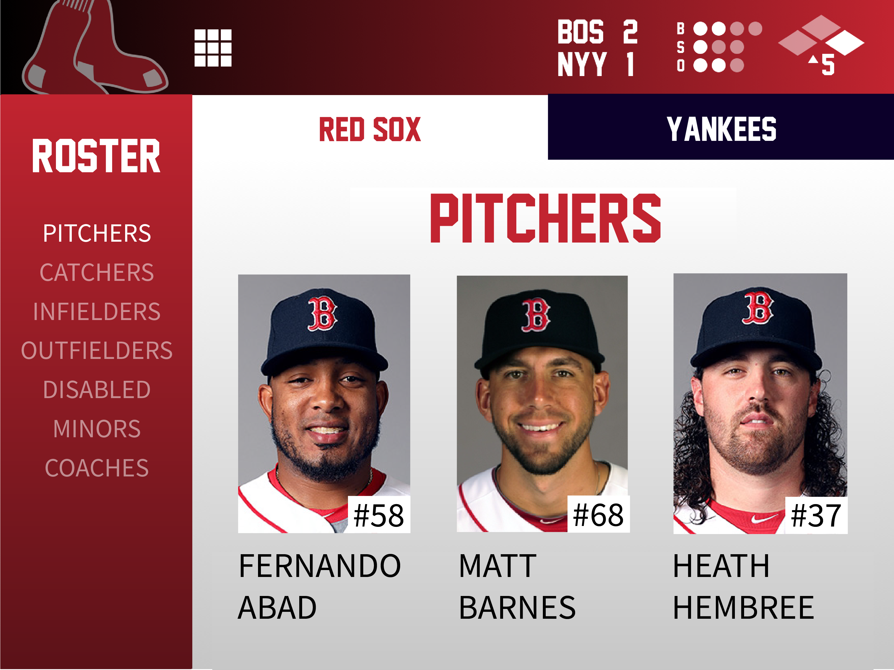

< Back
As part of the Software User Interface Design course at Tufts University, I designed an app in a team of 5 students that enhances the baseball experience for both novice and expert baseball fans. As project manager, I created a project timeline, delegated tasks, organized a focus group. I also wrote UI requirements, designed sample screens, prototyped in InVision, conducted usability testing, and presented the design to a panel of judges.
To interact with the prototype my group made for user testing, please follow this link.
< Back